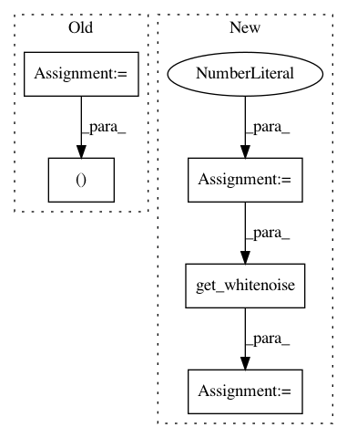

db8f2bf3f632b642ee05c5ea710ada5bdd0fdc4d,test/test_sox_compatibility.py,TestFunctionalFiltering,test_flanger_sine_linear,#TestFunctionalFiltering#,428
Before Change
E = torchaudio.sox_effects.SoxEffectsChain()
E.set_input_file(self.noise_filepath)
E.append_effect_to_chain("flanger", [delay, depth, regen, width, speed, "sine", phase, "linear"])
sox_output_waveform, sr = E.sox_build_flow_effects()
output_waveform = F.flanger(self.noise_waveform, self.NOISE_SAMPLE_RATE, delay, depth,
regen, width, speed, phase, modulation="sinusoidal", interpolation="linear")
After Change
width = 0.23
speed = 1.3
phase = 60
sample_rate = 8000
data, path = self.get_whitenoise(sample_rate)
result = F.flanger(
data, sample_rate, delay, depth, regen, width, speed, phase,
modulation="sinusoidal", interpolation="linear")
self.assert_sox_effect(
In pattern: SUPERPATTERN
Frequency: 4
Non-data size: 5
Instances
Project Name: pytorch/audio
Commit Name: db8f2bf3f632b642ee05c5ea710ada5bdd0fdc4d
Time: 2020-07-14
Author: 855818+mthrok@users.noreply.github.com
File Name: test/test_sox_compatibility.py
Class Name: TestFunctionalFiltering
Method Name: test_flanger_sine_linear
Project Name: pytorch/audio
Commit Name: db8f2bf3f632b642ee05c5ea710ada5bdd0fdc4d
Time: 2020-07-14
Author: 855818+mthrok@users.noreply.github.com
File Name: test/test_sox_compatibility.py
Class Name: TestFunctionalFiltering
Method Name: test_flanger_triangle_linear
Project Name: pytorch/audio
Commit Name: db8f2bf3f632b642ee05c5ea710ada5bdd0fdc4d
Time: 2020-07-14
Author: 855818+mthrok@users.noreply.github.com
File Name: test/test_sox_compatibility.py
Class Name: TestFunctionalFiltering
Method Name: test_flanger_sine_quad
Project Name: pytorch/audio
Commit Name: db8f2bf3f632b642ee05c5ea710ada5bdd0fdc4d
Time: 2020-07-14
Author: 855818+mthrok@users.noreply.github.com
File Name: test/test_sox_compatibility.py
Class Name: TestFunctionalFiltering
Method Name: test_flanger_triangle_quad